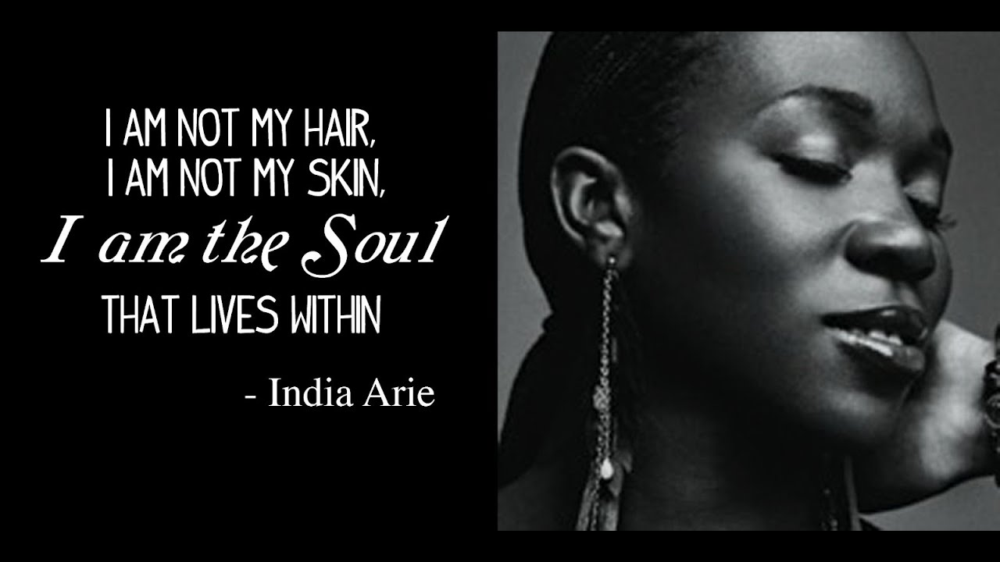

India Arie (Queen of Neo Soul)

From Wikipedia, the free encyclopedia
August 2024
India Arie Simpson (sometimes styled as india.arie) (born October 3, 1975) is an American singer and songwriter. Her debut album, Acoustic Soul, was released in 2001, and she has since released six more studio albums. Arie has sold over five million records in the US and ten million worldwide, and has won four Grammy Awards from 23 nominations, including Best R&B Album.
Background
India was born in Denver, the daughter of Joyce and Ralph Simpson. Her musical skills were encouraged by both parents in her younger years. Her mother is a former singer (she was signed to Motown as a teenager and opened for Stevie Wonder and Al Green) and has become Arie's stylist. She has an older brother named J'On and younger sister Mary A Martin of Philadelphia, Pennsylvania. Arie is African-American, and according to a DNA analysis, she descends from the Mende people of Sierra Leone, the Kru people of Liberia and the Fula people of Guinea-Bissau.
After Arie's parents divorced, her mother moved the family to Atlanta when India was 13. Arie's had taken up a succession of musical instruments throughout her schooling in Denver. But her interest in the guitar, while attending the Savannah College of Art and Design, led to a personal revelation about songwriting and performing. "When I started tapping into my own sensitivity, I started to understand people better. It was a direct result of writing songs", she said at the press release of her debut album, Acoustic Soul.
Co-founding the Atlanta-based independent music collective Government Earthseed (Government was the collective artists' name and Earthseed was their independent label name), her one-song turn on a locally released compilation led to a second-stage gig at the 1998 Lilith Fair. In 1999, a Universal/Motown music scout signed her and made an introduction to former Motown CEO Kedar Massenburg. Arie resided in New York City for over a decade, before moving back to Atlanta to focus on her career and music. . Named to Oprah Winfrey's SuperSoul100 list of visionaries and influential leaders,[9] India.Arie performed Songversation during 2017 motivational cruises.
Career
Arie released her debut album Acoustic Soul on March 27, 2001. The album was met with positive reviews and commercial success. Acoustic Soul debuted at number ten on the U.S. Billboard 200 and number three on the Top R&B/Hip-Hop Albums. Within months, without the concentrated radio airplay that typically powers pop and rap albums, Acoustic Soul was certified double platinum by the Recording Industry Association of America (RIAA), selling 2,180,000 copies in the U.S. and 3,000,000 copies worldwide. The album was also certified Gold by the British Phonographic Industry and platinum by Music Canada.[14] The album was promoted with the release of the lead single "Video". "Video" attained commercial success peaking at 47 on the US Billboard Hot 100 and becoming her highest-charting song in the region to date. The album's second single "Brown Skin" failed to chart on the Billboard Hot 100, but it became her highest-charting single in the United Kingdom, peaking at number 29.
Arie performed a duet with rock singer-guitarist John Mellencamp on the song "Peaceful World" for his 2001 album Cuttin' Heads. While Arie and the album were nominated for seven Grammy awards in 2002, they won no awards, losing in five of seven categories to Alicia Keys. She closed the ceremony with a performance of her song "Video". Arie performed a duet with jazz singer Cassandra Wilson on the song "Just Another Parade" for her 2002 album Belly of the Sun.
Arie followed the success of her debut on September 24, 2002, with the release of Voyage to India. It debuted at number six on the Billboard 200 with first week sales of 109,000 copies and topped the Top R&B/Hip-Hop Albums, with the RIAA certifying it Platinum. At the 2003 Grammy Awards, it won Best R&B Album, and the single "Little Things" won Best Urban/Alternative Performance. The song "Get It Together" was featured on many film soundtracks including Brown Sugar (2002) and Shark Tale (2004).
Impact
Arie and her work have influenced many artists, including Alexa Goddard, Anne-Marie, Ariana Grande, Doja Cat, Jess Glynne, Jhene Aiko, Khalid, Melanie Fiona, and Tori Kelly.
- Acoustic Soul (2001)
- Voyage to India (2002)
- Testimony: Vol. 1, Life & Relationship (2006)
- Testimony:Vol.2, Love a Politics (2009)
- Songversation (2013)
- Christmas with Friends (2015)
- worthy (2019)